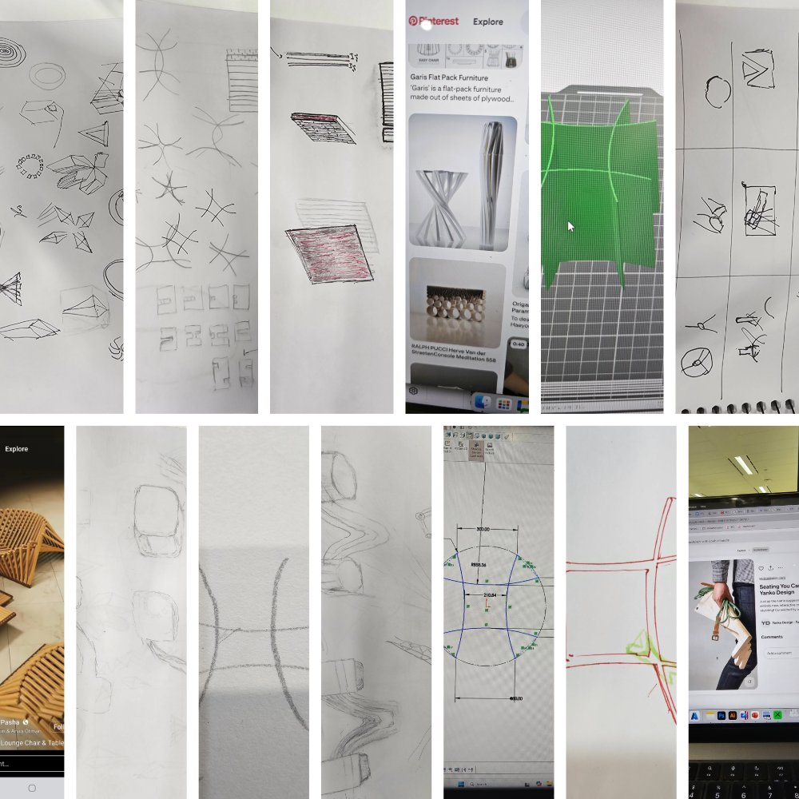
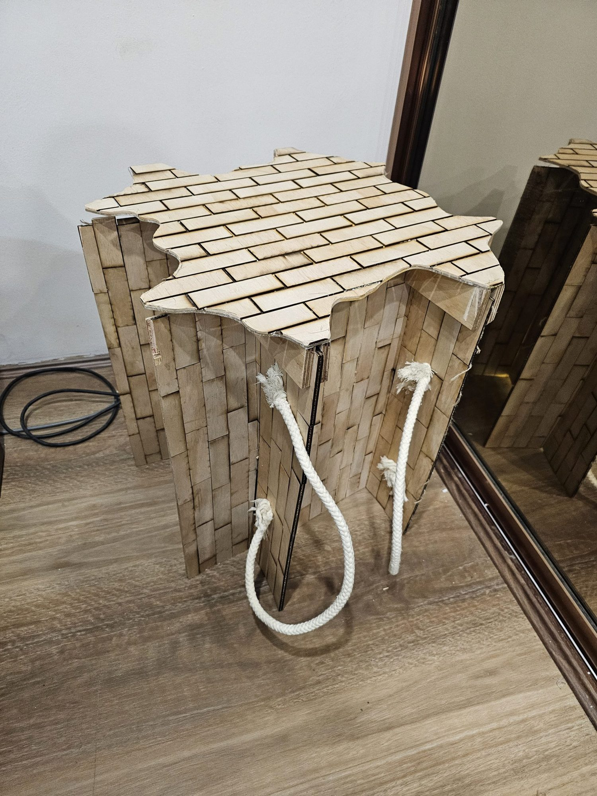
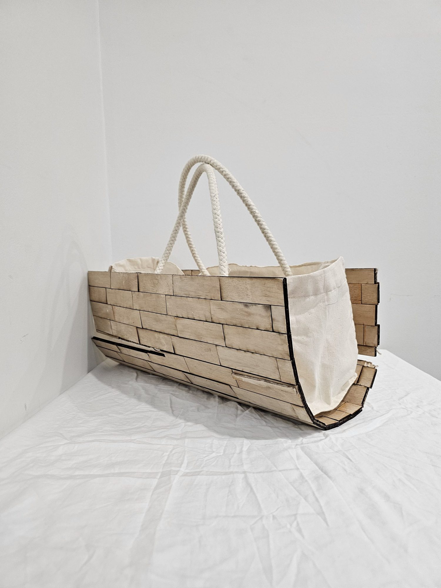
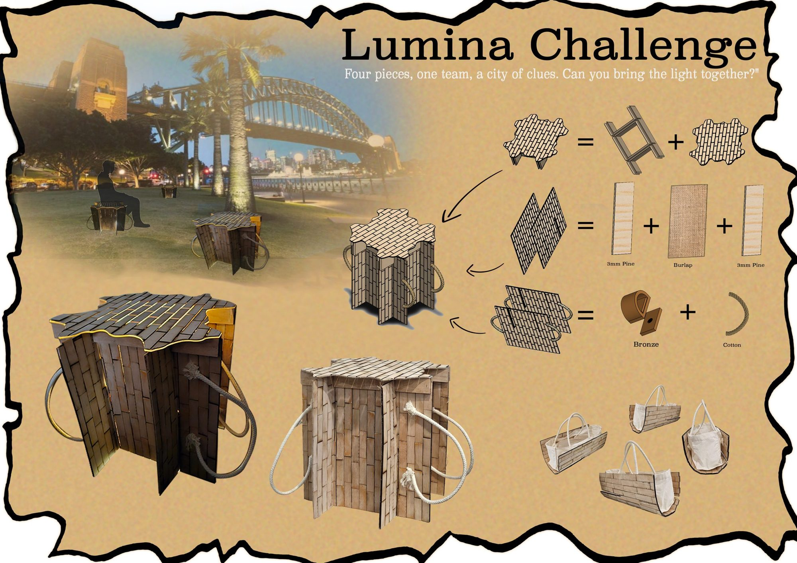
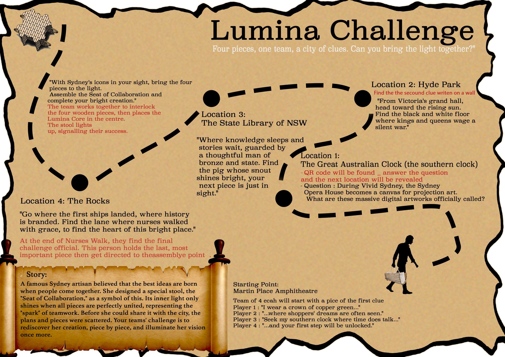
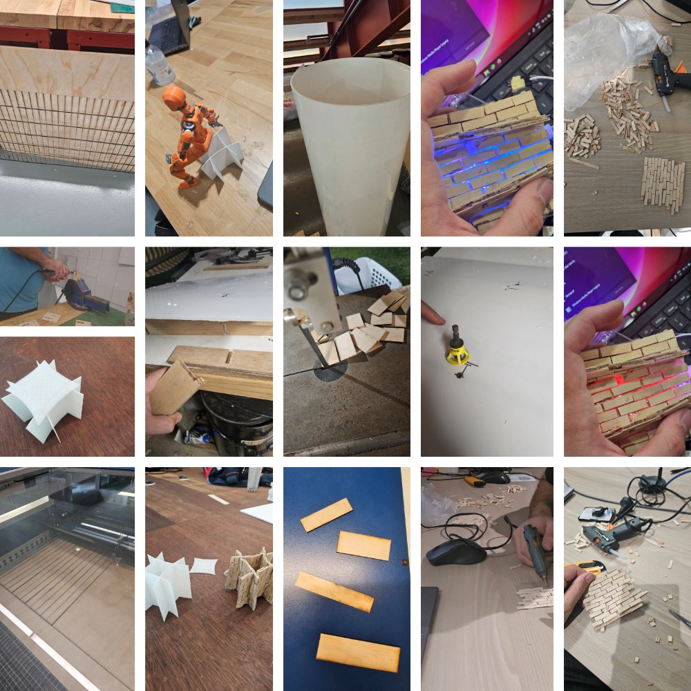
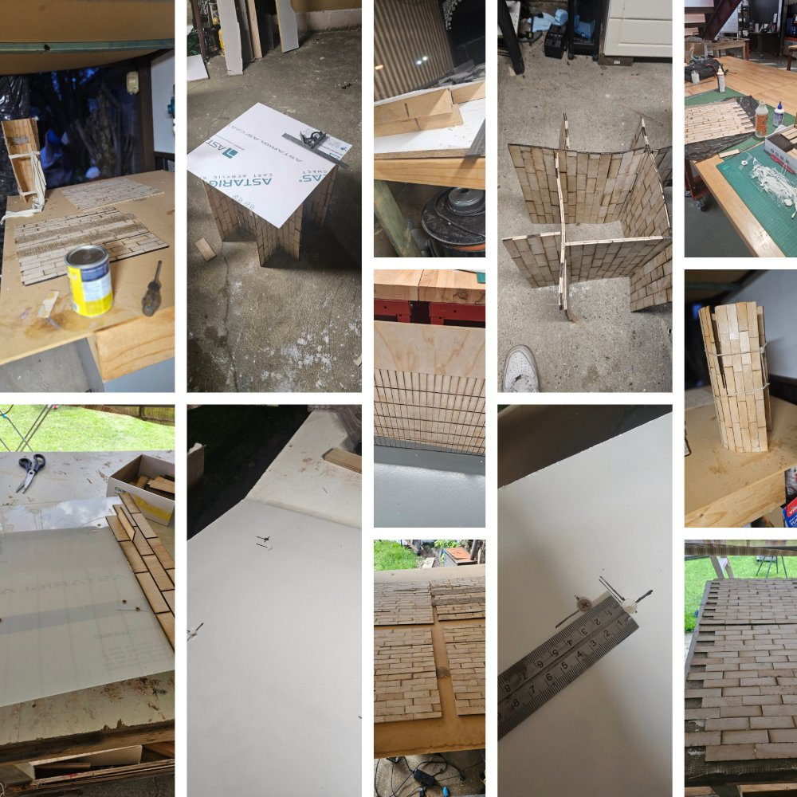

Ideation
Exploring interactive formats for VIVID — shifting from “stool first” to “interaction first”.

Idea pivot → interaction drives form.
An interactive stool designed for Sydney VIVID — collaboration becomes play, and light becomes the reward.





Interactive 3D model
Four curved mesh walls slot together like a #. The mesh lets it flex, roll up into a bag and let light through. Copper contacts at each joint close the circuit, so the light only comes on when it’s whole. Drag to turn it around.
Built from my SolidWorks models: 500 mm tall, mesh walls faced both sides with 30 × 100 × 3 mm pine slabs.
Lumina turns teamwork into a physical action. The stool separates into portable parts, prompting strangers to cooperate through a simple challenge structure. When the form is correctly reassembled, illumination confirms completion — a visible “yes”.
From interaction concept → assembly logic → material tests → final illuminated prototype.
Exploring interactive formats for VIVID — shifting from “stool first” to “interaction first”.

Idea pivot → interaction drives form.
Testing “brick” layout, spacing, and translucency — balancing structure with light bleed.

Pattern testing → structure + glow.
Developing a no-fastener interlock system that can be understood quickly in public.

No fasteners → intuitive assembly.
Correct assembly triggers illumination.
Activation → light confirms correct assembly.
A minimal object with an unusual behaviour: it becomes whole through people — not instructions.